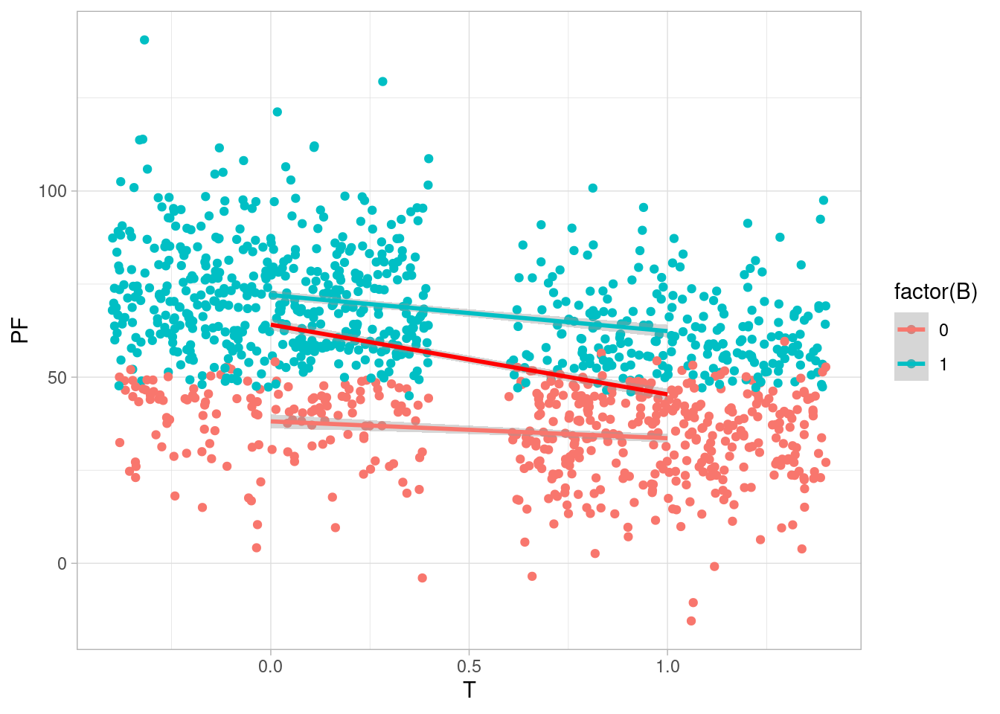

Código
library(tidyverse)
library(kableExtra)
library(DiagrammeR)
ggplot2::theme_set(ggplot2::theme_light())
inv_logit <- \(x) 1 / (1 + exp(-x)) library(tidyverse)
library(kableExtra)
library(DiagrammeR)
ggplot2::theme_set(ggplot2::theme_light())
inv_logit <- \(x) 1 / (1 + exp(-x)) En esta parte discutiremos una guía para decidir cuáles son buenos o malos “controles” para identificar efectos causales.
Si nos interencia inferencia causal, estas son malas maneras de seleccionar variables o controles:
Como hemos discutido, la decisión debe basarse primero en los supuestos causales (gráfica causal). Adicionalmente, también podemos considerar que, sujeto al anterior criterio, algunos modelos son más precisos o fáciles de estimar que otros.
Ejemplos de buenos controles son los de la fórmula de ajuste o los del criterio de puerta trasera que vimos en la sección anterior. Consideraremos los patrones que se presentan en Cinelli, Forney, y Pearl.
Consideramos el siguiente diagrama: en este caso, \(Z\) causa variación en \(Y\). Controlar por \(Y\) puede mejorar la precisión de nuestras estimaciones causales, sin abrir ningún camino no causal (Modelo 8 en Cinelli, Forney, y Pearl, A Crash Course in Good and Bad Controls) :
grViz('
digraph {
graph [ranksep = 0.2, rankdir = LR]
subgraph caso_1 {
node [shape=plaintext]
Z [fontcolor="red"]
edge [minlen = 3]
Z -> Y
T -> Y
}
}
', width = 250, height = 60)Queremos probar un tratamiento para reducir peso. Aleatorizaremos las personas al tratamiento (por ejemplo una medicina), y antes de comenzar el estudio registramos su peso inicial y estatura. Nuestro diagrama es el siguiente, donde incluímos también el peso inicial que influye en el peso final después del tratamiento, y otras variables no observadas que influyen tanto en peso final como peso inicial (por ejemplo, si las personas estuvieron haciendo alguna dietas o no). También medimos una cantidad, al final del experimento, que es bienestar general de la persona (o una calificación de su estado de salud general). Adicionalmente medimos una variable \(C\) (cansancio), pues sabemos que esta medicina puede tener ese efecto. El cansancio puede afectar el peso final pues los niveles de actividad pueden cambiar. \(B\) puede ser en este caso una medición de circunferencia de abdomen, por ejemplo.
grViz("
digraph {
graph [ranksep = 0.2, rankdir=LR]
node[shape=circle]
U
V
node [shape=plaintext]
Z
T
edge [minlen = 3]
#G -> H
#H -> PI
Z -> T
T -> PF
#G -> PF
PI -> PF
U -> PI
U -> PF
V -> PF
T -> C -> PF
PF -> B
}
")No hay ninguna variable confusora, y una estrategia de estimación es comparar \(PF\) entre los grupos.
sim_peso <- function(n){
Z <- rnorm(n, 0, 0.5)
p <- inv_logit( Z)
T <- rbinom(n, 1, p)
C <- rbinom(n, 1, 1/(1+exp(-(-2 + 4 * T))))
U <- rnorm(n, 0, 5)
G <- rbinom(n, 1, 0.5)
H <- rnorm(n, 170 - 10 * G, 20)
PI <- rnorm(n, -20 + 0.5 * H + U, 10)
PF <- rnorm(n, PI + U - 20 * T + 3 * C , 5)
#V <- PF - (PI + U - 10 * T + 2 * C)
B <- rbinom(n, 1, 1/(1 + exp(-(PF-50)/2)))
tibble(G, H, T, PI, PF, B, C, Z)
}
set.seed(226)
peso_tbl <- sim_peso(1200)
peso_tbl# A tibble: 1,200 × 8
G H T PI PF B C Z
<int> <dbl> <int> <dbl> <dbl> <int> <int> <dbl>
1 0 152. 0 53.8 46.8 0 0 -0.701
2 0 211. 0 87.2 87.0 1 0 -0.328
3 0 169. 1 71.8 48.1 0 1 -0.256
4 0 174. 0 66.4 61.6 1 0 0.208
5 1 164. 0 64.0 63.9 1 0 -0.470
6 0 146. 0 46.9 48.9 0 0 -0.126
7 1 201. 0 69.9 74.4 1 0 -0.892
8 1 153. 0 40.2 28.7 0 1 -0.0218
9 0 168. 1 58.1 26.3 0 1 0.221
10 1 162. 0 56.0 63.4 1 0 0.126
# ℹ 1,190 more rowsEn aplicaciones realidad, no sabemos cuál es el efecto causal, pero en ejemplos simulados sí podemos calcularlo. En este caso, hacemos la siguiente simulación para tener nuestra referencia:
peso_sims_tbl <- sim_peso(100000)
peso_sims_tbl |> group_by(T) |>
summarise(peso_final_medio = mean(PF)) |>
arrange(T) |>
mutate(dif = peso_final_medio - lag(peso_final_medio))# A tibble: 2 × 3
T peso_final_medio dif
<int> <dbl> <dbl>
1 0 62.8 NA
2 1 45.2 -17.6Podemos hacer simplemente
lm(PF ~ T, peso_tbl) |> broom::tidy()# A tibble: 2 × 5
term estimate std.error statistic p.value
<chr> <dbl> <dbl> <dbl> <dbl>
1 (Intercept) 64.1 0.774 82.8 0
2 T -18.7 1.11 -16.9 1.38e-57y el coeficiente de \(T\) sería una estimación del efecto causal promedio. Sin embargo, si condicionamos a \(PI\) tampoco creamos ninguna ruta no causal entre \(T\) y \(PF\). Podemos hacer también
lm(PF ~ T + PI, peso_tbl) |> broom::tidy()# A tibble: 3 × 5
term estimate std.error statistic p.value
<chr> <dbl> <dbl> <dbl> <dbl>
1 (Intercept) -7.30 0.855 -8.54 3.91e- 17
2 T -17.8 0.404 -44.1 5.19e-253
3 PI 1.13 0.0127 88.5 0 Y notamos que nuestra estimación es más precisa. Esto es porque \(PI\) absorbe una parte importante de la variación de PF. Al incluir este control no cambiamos la cantidad que estamos estimando, pero sí el estimador particular, que en este caso tiene menos incertidumbre.
Nótese que no necesariamente podemos interpetar el coeficiente de \(PI\) fácilmente, pues existen rutas no casuales activas entre \(PF\) y \(PI\). Como explicamos antes, un modelo que se usa para identificar un efecto causal particular no implica que puedan interpretarse como causales otros coeficientes.
Nota: este error se llama “Falacia de Tabla 2” porque muchas veces se presenta, después de una tabla de descriptivos de los grupos de tratamiento y de no-trameinto, una tabla con los resultados de un modelo de regresión que identifica el efecto causal de interés. Aunque la identificación puede ser correcta, esto no quiere decir que podamos interpretar el coeficiente de las variables de estratificación o control.
En los siguientes diagramas, condicionar por \(Z\) corta parte del efecto causal de \(T\) sobre \(Y\) (modelos 11 y 12 de Cinelli, Forney, y Pearl):
grViz('
digraph {
graph [ranksep = 0.2, rankdir = LR]
subgraph caso_1 {
node [shape=plaintext]
Z [fontcolor="red"]
edge [minlen = 3]
T -> Z
Z -> Y
T -> Y
}
subgraph caso_2 {
node [shape=plaintext]
Ya [label="Y"]
Ta [label="T"]
Za [label="Z"][fontcolor="red"]
edge [minlen = 3]
Ta -> M
M -> Ya
M -> Za
Ta -> Ya
}
}
', width = 250, height = 120)lm(PF ~ T + C, peso_tbl) |> broom::tidy()# A tibble: 3 × 5
term estimate std.error statistic p.value
<chr> <dbl> <dbl> <dbl> <dbl>
1 (Intercept) 64.0 0.805 79.5 0
2 T -19.1 1.69 -11.3 2.38e-28
3 C 0.514 1.69 0.305 7.60e- 1lm(PF ~ T + PI + C, peso_tbl) |> broom::tidy()# A tibble: 4 × 5
term estimate std.error statistic p.value
<chr> <dbl> <dbl> <dbl> <dbl>
1 (Intercept) -7.77 0.856 -9.08 4.41e- 19
2 T -19.8 0.610 -32.4 7.57e-166
3 PI 1.13 0.0126 89.2 0
4 C 2.59 0.610 4.25 2.32e- 5Y vemos que nuestra estimación del efecto del tratamiento está sesgada, aparentando ser más efectiva de lo que es. La razón es que el camino que pasa por \(C\) “daña” en lugar de ayudar. El efecto causal total toma en cuenta tanto beneficios como daños.
Variables que son efectos de la variable respuesta que nos interesa son en general malos controles. Es un caso particular de cómo se produce sesgo casos-control (por ejemplo, cuando seleccionamos individuos para observar dependiendo de una variable post-tratamiento). Para entender eso, agregamos explícitamente nodos que usualmente no mostramos en nuestros diagramas (están ahí implícitamente), que son efectos sobre \(Y\) que no tienen conexiones causales con otras partes del diagrama:
grViz('
digraph {
graph [ranksep = 0.2, rankdir = LR]
subgraph caso_1 {
node[shape= circle]
U_y
node [shape=plaintext]
Z [fontcolor="red"]
edge [minlen = 3]
Y -> Z
T -> Y
U_y -> Y
}
}
', width = 250, height = 120)Hemos añadido un nodo implícito (otros factores que afectan \(Y\) y no tienen relación con otras variables del sistema) para explicar qué es lo que pasa cuando condicionamos a \(Z\): como \(Z\) es un descendiente del colisionador en \(Y\), se activa una ruta no causal entre \(U_y\) y \(T\), y estas dos cantidades aparecen como correlacionadas (es una correlación no causal). Esto en consecuencia modifica la correlación entre \(T\) y \(Y\).
En nuestro ejemplo, podemos comparar las pendientes condicionando o no a la variable \(B\): vemos que dentro de cada grupo de \(B\), la pendiente es más chica que la que sugiere el efecto del tratamiento:
ggplot(peso_tbl, aes(x = T, y = PF, colour = factor(B))) +
geom_jitter() +
geom_smooth(method = "lm") +
geom_smooth(formula = "y~ 1+x", method = "lm", colour = "red")`geom_smooth()` using formula = 'y ~ x'
Como vemos, la pendiente en cada grupo de \(B\) es más baja que la que obtendríamos si no condicionáramos a \(B\). Podemos explicarlo así, bajo el supuesto de que el tratamiento tiene algún efecto:
En ambos casos, obtenemos una estimación sesgada del efecto causal. En una regresión, \(B\) absorbe entonces parte de la variación que en realidad le corresponde al tratamiento:
lm(PF ~ T + B, peso_tbl) |> broom::tidy()# A tibble: 3 × 5
term estimate std.error statistic p.value
<chr> <dbl> <dbl> <dbl> <dbl>
1 (Intercept) 40.3 0.810 49.8 4.04e-294
2 T -7.68 0.798 -9.62 3.73e- 21
3 B 31.0 0.811 38.2 1.09e-209En la regresión el coeficiente de \(T\) está contaminado por esa asociación que creamos al condicionar a un descendiente de un colisionador: este coeficiente “explica” otra variación del peso final que no tiene qué ver con el tratamiento, en lugar de explicar solamente la variación por el tratamiento.
Los modelo 16 y 17 ya los hemos examinado antes: cuando condicionamos a un colisionador activamos no causales que distorsionan la asociación.
grViz('
digraph {
graph [ranksep = 0.2, rankdir = LR]
subgraph caso_1 {
node [shape=plaintext]
Z [fontcolor="red"]
edge [minlen = 3]
T -> Z
Y -> Z
T -> Y
}
subgraph caso_2 {
node [shape=circle]
U
node [shape=plaintext]
Ya [label="Y"]
Ta [label="T"]
Za [label="Z"][fontcolor="red"]
edge [minlen = 3]
U -> Za
U -> Ya
Ta -> Ya
Ta -> Za
{rank=same; Za; Ta}
}
}
', width = 250, height = 140)Para ilustrar la primera de estas gráficas referimos al caso de la paradajo del peso bajo de los recién nacidos (Hernández-Díaz, Schisterman, y Hernán (2006)), The Birth Weight “Paradox” Uncovered?
En 1991, se observó que bebés nacidos de madres fumadoras tenían tanto peso más bajo como más alta mortalidad. Sin embargo, si excluíamos el análisis a bebés nacidos con bajo peso, los bebés de fumadoras tenían menos mortalidad que los de no fumadoras. Aunque hubo algunas especulaciones si fumar “protegía” a niños de bajo peso, podemos explicar la aparición de esta correlación por la activación de una ruta no causal al condicionar a niños de bajo peso.
grViz("
digraph {
graph [ranksep = 0.2, rankdir = LR]
subgraph caso_1 {
node [shape=plaintext]
T [label = 'T']
Y [label = 'Y']
Z [label = 'Z'][fontcolor = 'red']
node [shape=circle]
U
edge [minlen = 3]
T -> Y
T -> Z
Z -> Y
U -> Z
U -> Y
}
}")En la gráfica de arriba, \(T\) indica si la madre es fumadora o no, y \(Y\) la mortalidad. \(Z\) si el bebé nació con bajo peso o no.
\(U\) son posibles defectos de nacimiento no observados, que causan peso bajo e incrementan el riesgo de muerte. Cuando observamos a mujeres fumadoras, tenemos una explicación para el peso bajo, lo cual hace más improbable que se trate de un defecto grave de nacimiento. En consecuencia, el riesgo de muerte es más bajo.
Esta es una asociación no causal creada por condicionar a un colisionador.
Consideramos el siguiente diagrama:
grViz('
digraph {
graph [ranksep = 0.2, rankdir = LR]
subgraph caso_1 {
node [shape=plaintext]
Z [fontcolor="red"]
edge [minlen = 3]
Z -> T
T -> Y
}
}', width = 100, height = 50)En este caso, condicionar a \(Z\) no sesga nuestras estimaciones, pues no activamos ninguna ruta no causal. La dificultad es que típicamente disminuye la precisión de la estimación (usamos un modelo más grande donde no es necesario):
lm(PF ~ T + Z, data = peso_tbl) |> broom::tidy()# A tibble: 3 × 5
term estimate std.error statistic p.value
<chr> <dbl> <dbl> <dbl> <dbl>
1 (Intercept) 64.1 0.784 81.8 0
2 T -18.8 1.14 -16.5 2.21e-55
3 Z 0.446 1.15 0.388 6.98e- 1lm(PF ~ T, data = peso_tbl) |> broom::tidy()# A tibble: 2 × 5
term estimate std.error statistic p.value
<chr> <dbl> <dbl> <dbl> <dbl>
1 (Intercept) 64.1 0.774 82.8 0
2 T -18.7 1.11 -16.9 1.38e-57Estos parásitos en ciertas circunstancias pueden empeorar estimaciones causales y causar sesgo adicional. Consideremos el siguiente diagrama:
grViz('
digraph {
graph [ranksep = 0.2, rankdir = LR]
subgraph caso_1 {
node [shape=plaintext]
Z [fontcolor="red"]
X
Y
node [shape = circle]
U
edge [minlen = 3]
U -> X
U -> Y
Z -> X
X -> Y
}
}', width = 100, height = 50)En este caso, tenemos una variable confusora \(U\) que no nos permite estimar sin sesgo el efecto de \(T\) sobre \(Y\). Sin embargo, si condicionamos a \(Z\), la situación puede emperorar (amplificación de sesgo), pues dentro de cada nivel de \(Z\) hay menos variación de \(X\), y eso implica que la covarianza entre \(X\) y \(Y\), en cada nivel de \(Z\), se debe más a la variable confusora.
Podemos hacer un ejemplo simulado (ver más en McElreath (2020)):
n <- 5000
z <- rbinom(n, 1, 0.5)
u <- rnorm(n)
x <- rnorm(n, 5 * z + u, 1)
y <- rnorm(n, x + u, 1)
datos <- tibble(x = x, z = z, u = u, y = y)
lm(y ~ x, datos) |> broom::tidy()# A tibble: 2 × 5
term estimate std.error statistic p.value
<chr> <dbl> <dbl> <dbl> <dbl>
1 (Intercept) -0.278 0.0265 -10.5 1.47e-25
2 x 1.12 0.00697 161. 0 lm(y ~ x + z, datos) |> broom::tidy()# A tibble: 3 × 5
term estimate std.error statistic p.value
<chr> <dbl> <dbl> <dbl> <dbl>
1 (Intercept) 0.0254 0.0250 1.02 3.09e- 1
2 x 1.51 0.0124 121. 0
3 z -2.56 0.0708 -36.2 1.78e-254El efecto causal es de 1 unidad. Los modelos presentan estimaciones sesgadas, pero es peor el que incluye la variable parásito.